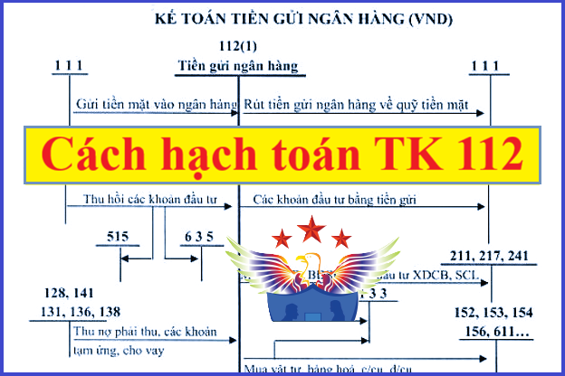

Hướng dẫn cách hạch toán tiền gửi không kỳ hạn - Tài khoản 112 áp dụng chế độ kế toán theo Thông tư 99/2025/TT-BTC mới nhất 2026, hạch toán gửi tiền vào ngân hàng, hạch toán rút tiền gửi ngân hàng, các khoản tiền gửi không kỳ hạn tại ngân hàng của doanh nghiệp
1. Tài khoản 112 - Tiền gửi không kỳ hạn
Nguyên tắc kế toán
Tài khoản này dùng để phản ánh số hiện có và tình hình biến động tăng, giảm các khoản tiền gửi không kỳ hạn tại ngân hàng, tổ chức khác mà doanh nghiệp được gửi tiền không kỳ hạn theo quy định của pháp luật, bao gồm tiền Việt Nam, ngoại tệ,...
a) Căn cứ để hạch toán trên Tài khoản 112 - Tiền gửi không kỳ hạn là các giấy báo Có, báo Nợ hoặc bản sao kê của ngân hàng, tổ chức khác mà doanh nghiệp được gửi tiền không kỳ hạn theo quy định của pháp luật kèm theo các chứng từ gốc (ủy nhiệm chi, ủy nhiệm thu, séc chuyển khoản, séc bảo chi,…).
b) Khi nhận được chứng từ của ngân hàng, tổ chức khác nơi doanh nghiệp gửi tiền không kỳ hạn, doanh nghiệp phải kiểm tra, đối chiếu với chứng từ gốc kèm theo. Nếu có sự chênh lệch giữa số liệu trên sổ kế toán của doanh nghiệp, số liệu ở chứng từ gốc với số liệu trên chứng từ của ngân hàng,... thì doanh nghiệp phải thông báo cho các đơn vị đó để cùng đối chiếu, xác minh và xử lý kịp thời. Cuối tháng, nếu chưa xác định được nguyên nhân chênh lệch thì doanh nghiệp ghi sổ theo số liệu trên giấy báo Nợ, báo Có hoặc bản sao kê của ngân hàng,... còn số chênh lệch được ghi vào bên Nợ Tài khoản 138 - Phải thu khác (nếu số liệu của kế toán lớn hơn số liệu của ngân hàng,…) hoặc ghi vào bên Có Tài khoản 338 - Phải trả, phải nộp khác (nếu số liệu của kế toán nhỏ hơn số liệu của ngân hàng,...). Sang tháng sau, tiếp tục kiểm tra, đối chiếu, xác định nguyên nhân để điều chỉnh số liệu ghi sổ.
c) Phải tổ chức hạch toán chi tiết số tiền gửi không kỳ hạn theo từng tài khoản ở từng ngân hàng, tổ chức khác mà doanh nghiệp được gửi tiền không kỳ hạn theo quy định của pháp luật để tiện cho việc kiểm tra, đối chiếu.
d) Khoản thấu chi ngân hàng không được ghi âm trên tài khoản tiền gửi không kỳ hạn mà được phản ánh tương tự như khoản vay ngân hàng,...
đ) Việc gửi vàng tiền tệ vào ngân hàng được thực hiện theo quy định của pháp luật liên quan và việc kế toán vàng tiền tệ gửi tại ngân hàng (nếu có) được thực hiện tương tự Tài khoản 111 - Tiền mặt.
2. Kết cấu và nội dung Tài khoản 112
|
Bên Nợ: |
Bên Có: |
|
- Các khoản tiền Việt Nam, ngoại tệ,... gửi vào ngân hàng, tổ chức khác mà doanh nghiệp được gửi tiền không kỳ hạn theo quy định của pháp luật; - Chênh lệch tỷ giá hối đoái do đánh giá lại số dư tiền gửi không kỳ hạn bằng ngoại tệ tại thời điểm kết thúc kỳ kế toán (trường hợp tỷ giá ngoại tệ tăng so với đơn vị tiền tệ trong kế toán). |
- Các khoản tiền Việt Nam, ngoại tệ,... rút ra từ ngân hàng, tổ chức khác mà doanh nghiệp được gửi tiền không kỳ hạn theo quy định của pháp luật; - Chênh lệch tỷ giá hối đoái do đánh giá lại số dư tiền gửi không kỳ hạn bằng ngoại tệ tại thời điểm kết thúc kỳ kế toán (trường hợp tỷ giá ngoại tệ giảm so với đơn vị tiền tệ trong kế toán). |
|
Số dư bên Nợ: Số tiền Việt Nam, ngoại tệ,... hiện còn gửi tại ngân hàng, tổ chức khác mà doanh nghiệp được gửi tiền không kỳ hạn, thanh toán theo quy định của pháp luật tại thời điểm kết thúc kỳ kế toán. |
Trên bảng danh mục tài khoản của Thông tư 99/2025/TT-BTC thì Tài khoản 112 - Tiền gửi không kỳ hạn, không có 2 tài khoản chi tiết
=>>> Doanh nghiệp có thể mở thêm các tài khoản chi tiết của TK 112 để theo dõi các loại tiền gửi không kỳ hạn (ví dụ như tiền Việt Nam, ngoại tệ,...) cho phù hợp với đặc điểm hoạt động sản xuất, kinh doanh và yêu cầu quản lý của đơn vị mình.
3. Cách hạch toán tiền gửi ngân hàng một số nghiệp vụ:
|
1. Khi bán sản phẩm, hàng hóa, cung cấp dịch vụ thu ngay bằng tiền gửi không kỳ hạn, ghi:
a) Đối với sản phẩm, hàng hóa, dịch vụ, BĐSĐT thuộc đối tượng chịu thuế (thuế GTGT, thuế TTĐB, thuế xuất khẩu,...), doanh nghiệp phản ánh doanh thu bán hàng và cung cấp dịch vụ theo giá bán chưa có thuế, các khoản thuế gián thu phải nộp được tách riêng theo từng loại thuế ngay khi ghi nhận doanh thu, ghi:
Nợ TK 112 - Tiền gửi không kỳ hạn (tổng giá thanh toán)
Có TK 511 - Doanh thu bán hàng và cung cấp dịch vụ (giá chưa có thuế)
Có TK 333 - Thuế và các khoản phải nộp Nhà nước.
b) Trường hợp các khoản thuế phải nộp không tách riêng ngay từng loại thuế tại thời điểm phát sinh giao dịch, doanh nghiệp ghi nhận doanh thu bao gồm cả thuế phải nộp. Định kỳ, doanh nghiệp xác định nghĩa vụ thuế phải nộp và ghi giảm doanh thu, ghi:
Nợ TK 511 - Doanh thu bán hàng và cung cấp dịch vụ
Có TK 333 - Thuế và các khoản phải nộp Nhà nước.
2. Khi nhận được tiền của Nhà nước thanh toán về khoản trợ cấp, trợ giá bằng tiền gửi không kỳ hạn, ghi:
Nợ TK 112 - Tiền gửi không kỳ hạn
Có TK 333 - Thuế và các khoản phải nộp Nhà nước (3339).
3. Khoản phát sinh các khoản doanh thu hoạt động tài chính, các khoản thu nhập khác bằng tiền gửi không kỳ hạn, ghi:
Nợ TK 112 - Tiền gửi không kỳ hạn (tổng giá thanh toán)
Có TK 515 - Doanh thu hoạt động tài chính (giá chưa có thuế GTGT)
Có TK 711 - Thu nhập khác (giá chưa có thuế GTGT)
Có TK 3331 - Thuế GTGT phải nộp (33311).
4. Xuất quỹ tiền mặt gửi vào tài khoản không kỳ hạn tại ngân hàng ghi:
Nợ TK 112 - Tiền gửi không kỳ hạn
Có TK 111 - Tiền mặt.
Chi tiết xem tại đây: Cách hạch toán tiền mặt
5. Nhận được tiền khách hàng trả nợ bằng chuyển khoản, căn cứ giấy báo Có của ngân hàng,..., ghi:
Nợ TK 112 - Tiền gửi không kỳ hạn
Có TK 131 - Phải thu của khách hàng
Có TK 113 - Tiền đang chuyển.
6. Thu hồi các khoản nợ phải thu, cho vay, tạm ứng, ký quỹ, ký cược bằng tiền gửi không kỳ hạn; Nhận ký quỹ, ký cược của các doanh nghiệp khác bằng tiền gửi không kỳ hạn, ghi:
Nợ TK 112 - Tiền gửi không kỳ hạn
Có các TK 128, 131, 136, 141, 244, 344,...
7. Khi bán các khoản đầu tư ngắn hạn, dài hạn thu bằng tiền gửi không kỳ hạn, doanh nghiệp ghi nhận chênh lệch giữa số tiền thu được và giá gốc khoản đầu tư vào doanh thu hoạt động tài chính hoặc chi phí tài chính, ghi:
Nợ TK 112 - Tiền gửi không kỳ hạn
Nợ TK 635 - Chi phí tài chính (nếu lỗ)
Nợ TK 229 - Dự phòng tổn thất tài sản (nếu có)
Có các TK 121, 221, 222, 228 (giá vốn)
Có TK 515 - Doanh thu hoạt động tài chính (nếu lãi).
Việc hoàn nhập các khoản dự phòng đã trích lập đối với các khoản đầu tư có thể được ghi nhận ngay cho từng giao dịch tại thời điểm bán khoản đầu tư hoặc khi xác định số trích lập dự phòng các khoản đầu tư vào cuối mỗi kỳ kế toán nhưng phải nhất quán theo quy định của chuẩn mực kế toán Việt Nam.
8. Khi nhận được vốn góp của chủ sở hữu bằng tiền gửi không kỳ hạn, ghi:
Nợ TK 112 - Tiền gửi không kỳ hạn
Nợ TK 4112 - Thặng dư vốn (chênh lệch giữa giá trị vốn góp thực nhận nhỏ hơn mệnh giá cổ phần đối với công ty cổ phần hoặc giá trị phần vốn góp theo điều lệ đối với loại hình doanh nghiệp khác) (nếu có)
Có TK 4111 - Vốn góp của chủ sở hữu
Có TK 4112 - Thặng dư vốn (chênh lệch giữa giá trị vốn góp thực nhận lớn hơn mệnh giá cổ phần đối với công ty cổ phần hoặc giá trị phần vốn góp theo điều lệ đối với loại hình doanh nghiệp khác) (nếu có).
9. Rút tiền gửi về nhập quỹ tiền mặt, chuyển tiền gửi không kỳ hạn đem đi ký quỹ, ký cược, ghi:
Nợ TK 111 - Tiền mặt
Nợ TK 244 - Ký quỹ, ký cược.
Có TK 112 - Tiền gửi không kỳ hạn.
10. Mua chứng khoán kinh doanh, gửi tiền có kỳ hạn, mua trái phiếu, cho vay hoặc đầu tư vào công ty con, công ty liên doanh, liên kết... bằng tiền gửi không kỳ hạn, ghi:
Nợ các TK 121, 128, 221, 222, 228,...
Có TK 112 - Tiền gửi không kỳ hạn.
11. Mua hàng tồn kho, mua TSCĐ, chi cho hoạt động đầu tư XDCB,... bằng tiền gửi không kỳ hạn, ghi:
Nợ các TK 151, 152, 153, 156, 211, 213, 241,...
Nợ TK 133 - Thuế GTGT được khấu trừ (1331) (nếu có)
Có TK 112 - Tiền gửi không kỳ hạn.
12. Mua nguyên vật liệu thanh toán bằng tiền gửi không kỳ hạn sử dụng ngay vào sản xuất, kinh doanh, ghi:
Nợ các TK 621, 623, 627, 641, 642,...
Nợ TK 133 - Thuế GTGT được khấu trừ (1331) (nếu có)
Có TK 112 - Tiền gửi không kỳ hạn.
13. Thanh toán các khoản nợ phải trả, vay và nợ thuê tài chính,... bằng tiền gửi không kỳ hạn, ghi:
Nợ các TK 331, 333, 334, 335, 336, 338, 341,...
Có TK 112 - Tiền gửi không kỳ hạn.
14. Chi phí tài chính, chi phí khác phát sinh bằng tiền gửi không kỳ hạn, ghi:
Nợ các TK 635, 811,...
Nợ TK 133 - Thuế GTGT được khấu trừ (nếu có)
Có TK 112 - Tiền gửi không kỳ hạn.
15. Trả vốn góp hoặc trả cổ tức, lợi nhuận cho cổ đông hoặc các bên góp vốn, chi các quỹ khen thưởng, phúc lợi bằng tiền gửi không kỳ hạn, ghi:
Nợ TK 411 - Vốn đầu tư của chủ sở hữu (trả vốn góp)
Nợ TK 332 - Phải trả cổ tức, lợi nhuận (trả cổ tức, lợi nhuận)
Nợ TK 353 - Quỹ khen thưởng, phúc lợi (chi quỹ khen thưởng, phúc lợi)
Có TK 112 - Tiền gửi không kỳ hạn.
|
Chúc các bạn làm tốt công việc kế toán. Kế toán Diệu Tâm liên tục khai giảng các lớp học thực hành kế toán thực tế tại Hà Nội: Dạy kê khai thuế, lập Báo cáo tài chính, Quyết toán thuế cuối năm trực tiếp trên chứng từ thực tế.
-----------------------------------------------------
